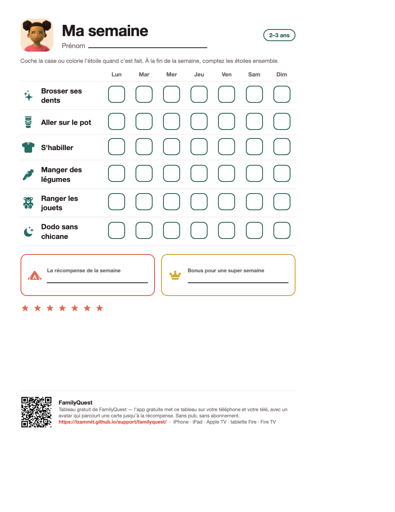
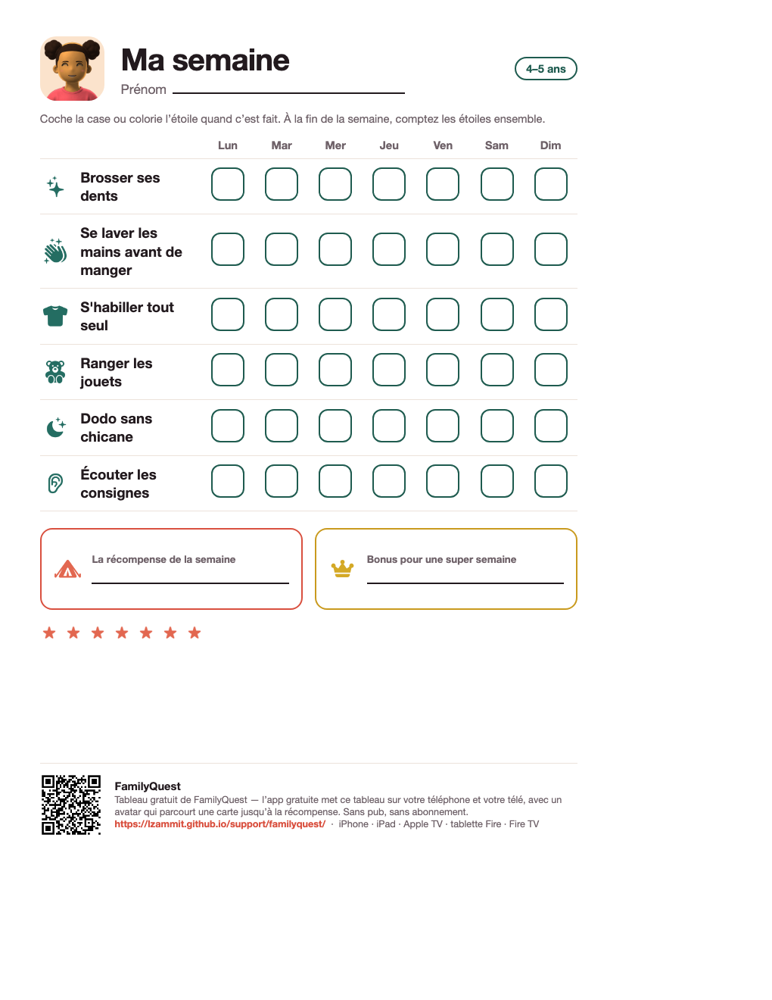

Un tableau de motivation pour un enfant de 2 à 5 ans
La plupart des tableaux de tâches sont des listes, et un tout-petit ne lit pas une liste. Celui-ci est en images : six routines de tous les jours, sept jours, une case à cocher ou une étoile à colorier, et la récompense choisie par l’enfant au bas de la page. Imprimez-le pour le frigo — ou laissez l’app gratuite le mettre sur votre téléphone et votre télé.
Le tableau gratuit à imprimer
Format lettre, une page, aucune inscription. Deux tranches d’âge, en français et en anglais.

2–3 ans (PDF)Brosser ses dents · Aller sur le pot · S’habiller · Manger des légumes · Ranger les jouets · Dodo sans chicane
4–5 ans (PDF)Brosser ses dents · Se laver les mains avant de manger · S’habiller tout seul · Ranger les jouets · Dodo sans chicane · Écouter les consignesVersions anglaises : ages 2–3 · ages 4–5
Quoi mettre dessus, et quoi laisser de côté
À deux ou trois ans, un tableau fonctionne quand il montre des choses que l’enfant fait déjà avec vous chaque jour et qu’il reconnaît sur une image. Les dents, le pot, s’habiller, goûter aux légumes, ranger les jouets, aller au lit sans bataille. Cinq ou six suffisent — une page pleine de tâches est une page que plus personne ne regarde le mercredi.
Laissez de côté l’abstrait (« être gentil », « partager ») et tout ce qui touche à l’argent. Un autocollant, une sortie au parc, une histoire de plus : des récompenses à l’échelle d’une semaine, choisies par l’enfant. Le choix fait la moitié de l’effet.
Comment l’utiliser
Cochez ensemble, tout de suite
Le geste de cocher, c’est l’habitude. Faites-le avec l’enfant, au moment où c’est fait, chaque fois.
Une récompense petite et hebdomadaire
Quelque chose que vous donneriez volontiers chaque semaine. Écrivez-la sur le tableau pour qu’elle soit sous ses yeux toute la semaine.
Comptez les étoiles le dimanche
Comptez ensemble, donnez la récompense, recommencez une feuille. Un tout-petit a besoin que la semaine finisse et recommence, pas d’un total qui s’accumule.
Le même tableau, à la télé
Ce tableau vient de FamilyQuest, une app gratuite conçue exactement pour cet âge. Les mêmes objectifs en images, mais l’enfant a un avatar qui parcourt une carte vers la récompense à mesure que la semaine se remplit — sur le téléphone, la tablette et le téléviseur devant lequel la famille est déjà assise. Deux parents partagent une même famille ; une semaine terminée est conservée telle quelle. Sans pub, sans abonnement, sans compte pour les enfants.
Gratuit. Sans publicité, sans abonnement, sans achat intégré.
Questions
Que mettre sur un tableau de motivation pour un enfant de 2 ou 3 ans ?
Des routines qu’il fait déjà avec vous, en image : brosser ses dents, aller sur le pot, s’habiller, manger des légumes, ranger les jouets, dodo sans chicane. Cinq ou six, pas plus. L’important est l’image à côté de chaque tâche — un tout-petit lit l’image, pas le mot.
Comment utiliser un tableau de motivation avec un tout-petit ?
Cochez ensemble, tout de suite après, chaque fois. Gardez une récompense petite, hebdomadaire et choisie par l’enfant — une sortie au parc, une histoire de plus. À la fin de la semaine, comptez les étoiles ensemble et donnez la récompense quel que soit le compte ; l’habitude, c’est le geste de cocher.
Existe-t-il une version app de ce tableau ?
Oui. FamilyQuest est l’app gratuite d’où vient ce tableau : les mêmes objectifs en images, l’avatar de l’enfant qui parcourt une carte vers la récompense, sur le téléphone, la tablette et la télé du salon. Sans pub, sans abonnement.
Le tableau est-il aussi en anglais ?
Oui — le tableau et l’app sont en français canadien et en anglais.